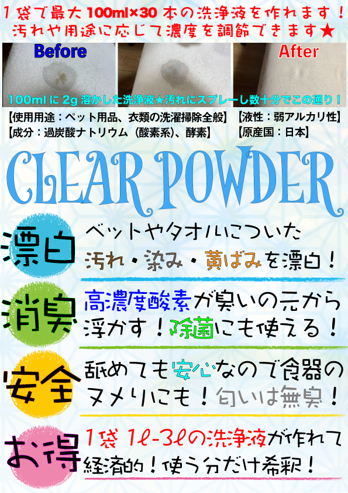
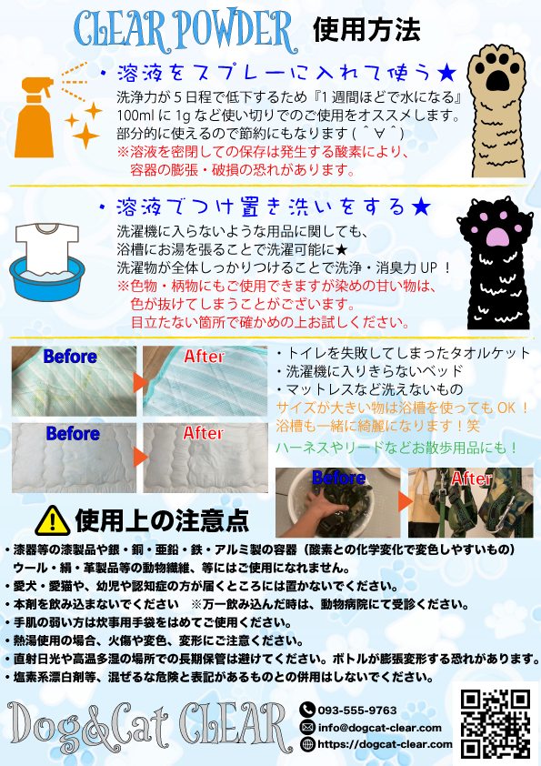

CLEAR POWDER
CLEAR POWDERは漂白・消臭・安全・お得と四拍子が揃ったペット用粉末洗剤です★
嗅覚が優れる匂いに敏感な愛犬・愛猫のストレス面を考慮し、無香料・無臭の商品にもなっております。
界面活性剤のような化学薬品不使用な商品になりますので、愛犬・愛猫の身体に触れるような、ベッドや布団にも安心してお使い頂けます。
ペット用の洗剤としても、消臭除菌スプレーとしても、飼い主さまの布マスクなどの洗濯にも！
汚れや、臭いの強さに応じて、濃度を調節して使うこともできます★
CLEAR POWDER
４つの特徴

CLEAR POWDER
４つの特徴
01漂白効果
散歩をしていると洋服や、ハーネス・リードが汚れてしまったり、布団やベッドに愛犬・愛猫の足裏汚れや、オシッコを失敗してしまい、黄ばみ汚れがついてしまうことってありますよね？
そんな汚れにお困りの飼い主さまはCLEAR POWDERの漂白効果をお試しください！
汚れや、シミ、黄ばみにCLEAR POWDERをお湯に溶かして、つけ置き洗濯、スプレーするだけ！
ペット用品の漂白としてはもちろんのこと、飼い主さまの衣料・衣類についてしまったシミや黄ばみにもお使い頂けます★
02消臭効果
お部屋の思わぬところでオシッコをされてしまう時ってありますよね？
色々消臭剤を試したけど思うような効果が得られない。
そんな臭いにはCLEAR POWDERの消臭効果をお試しください！
CLEAR POWDERの消臭力はお客さまからのお声に驚くことも！
オシッコを拭き取らずにCLEAR POWDERをかけたら翌日臭いが消えた！と凄い効果も★
消臭剤としても、高い消臭力をお試しください！
03安全面
CLEAR POWDERの成分・原材料としては過炭酸ナトリウムと酵素です☆
自然界に存在し、食品にも添加される水素・酸素・炭素・ナトリウムからできております★
界面活性剤などの化学薬品、香料は使用しておりません。
皮膚への刺激性は通常（100mlに1g）の20倍濃度の溶液を、代表の腕にて2時間塗布し、赤み・刺激性の無さを確認済みです。笑
※とはいえ飲食品ではございませんので、愛犬・愛猫が粉末・溶液を誤飲しないよう保管ください。
04お得面
ペット用品の消臭除菌スプレーなのであれば、300mℓで2000円前後の価格が多いですよね！
それに比べ、CLEAR POWDERは30gで850円(税込) での販売になりますが、30gで1〜3ℓの漂白・消臭・除菌液が作れます！
まとめ買いにて550円（税込）まで！さらにお得になります★
汚れや臭いの強さに応じて溶液の濃度を調節してお使いください★